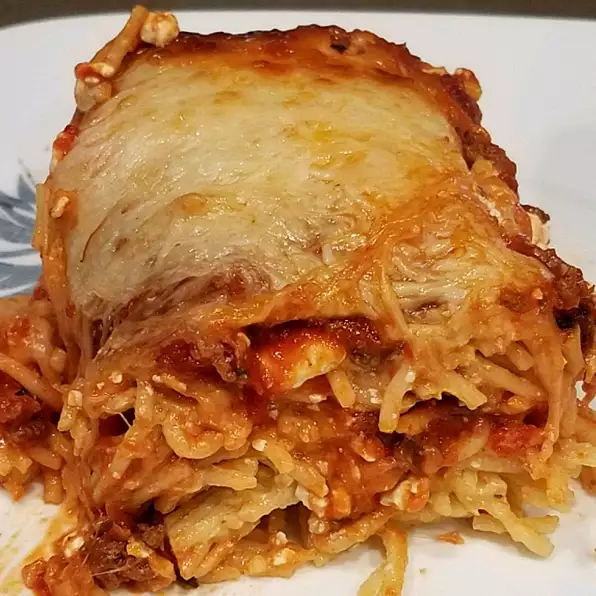
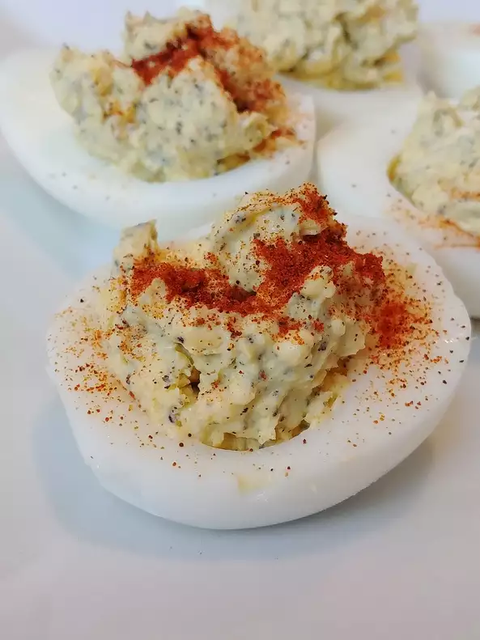
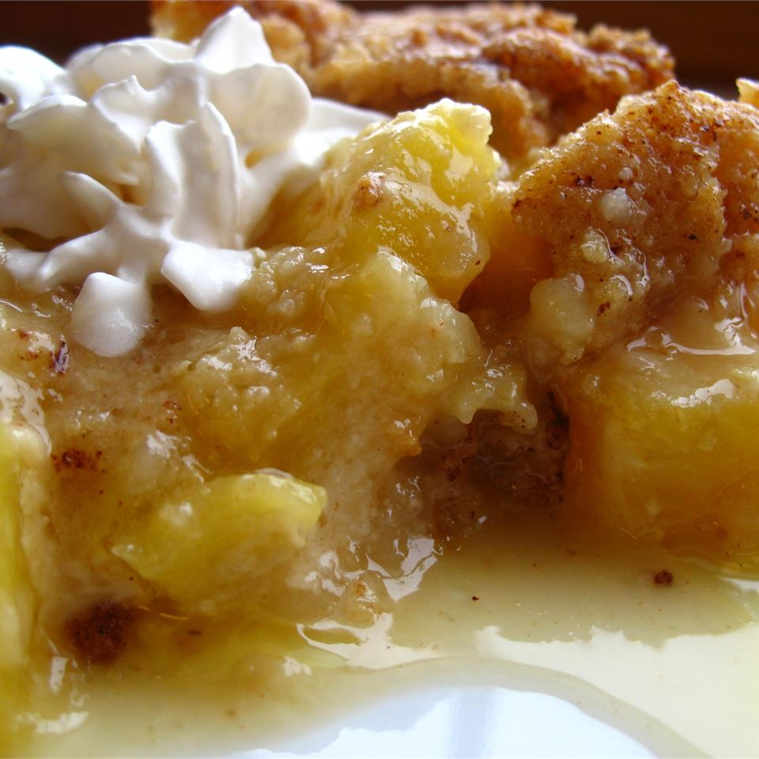

Odin Recipes
To unlock these declicious recipes, click here!
Delicious Baked Spaghetti

A comforting baked spaghetti casserole with plenty of melted cheese is the perfect dish for potlucks, family gatherings, or a week-night dinner. If this is what you desire, then this is the recipe for you. The linked recipe doesn't require much for recipes or ingredients but is sure to deliver a tastey and filling meal!
Ingredients
1 (16oz) spaghettie mix pack/
1 lb ground beef/
1 (32oz) jar meatless sauce/
1/2 teaspoon season salt/
2 eggs/
1/3 cup greated Pamesan cheese/
5 tablespoons butter, melted/
2 cups small curd cottage cheese, divided/
5 cups shredded mozzarella cheese, divided/
Preheat oven to 350 degrees.
Cook spaghetti in boiling water/ simmer for 12 minutes/ drain.
Cook and stir beef until meat is browned/ season with salt.
Whisk eggs, parmesan, and butter into bowl/ add spaghetti and toss to coat.
Place 1/2 of spaghetti mixture in a dish, top with 1/2 of the cottage cheese, 2 cups mozzarella, and 1/2 of the meat sauce. Repeat and cover with aluminum foil.
Bake in preheated over for 40 min, remove foil and sprinkle with remaining mozzarella, continue to bake until cheese topping is melted and lightly browned.
Yummy Deviled Eggs

This is a basic deviled egg with a little twist of ranch.
Ingredients
6 eggs
1/4 cup mayo
1 teaspoon ground black pepper
1 teaspoon ranch dressing mix
1 teaspoon prepared yellow mustard
1 pinch of paprika to garnish
Place eggs in a saucepan and cover with cold water. Bring water to a boil and immediately remove from heat. Cover and let eggs stand in hot water for 10 to 12 minutes. Remove from hot water, cool and peel.
Cut the eggs in half lengthwise and carefully remove the yolks to a bowl. Mash the yolks with the mayonnaise and mustard and season with pepper and ranch dressing mix, blending until smooth. Spoon the mixture into the egg white halves and garnish with a sprinkle of paprika.
Pineapple Crisp

This crisp is excellent served warm with vanilla ice cream.
Ingredients
2 (20oz) cans of crushed pineapple
1 cup all-purpose flour
1 cup brown sugar
1 teaspoon baking powder
1/2 teaspoon salt
1 egg
1/2 cup butter, melted
1 teaspoon ground cinnamon
Preheat oven to 350 degrees F (175 degrees C).
Spread well-drained pineapple into a 9x9 inch square baking pan.
In a medium bowl, mix together flour, sugar, baking powder, salt and egg until smooth. Spoon mixture evenly over pineapple. Pour melted butter over mixture and then sprinkle with cinnamon.
Bake in preheated oven for 40 to 45 minutes. Serve hot or cold.